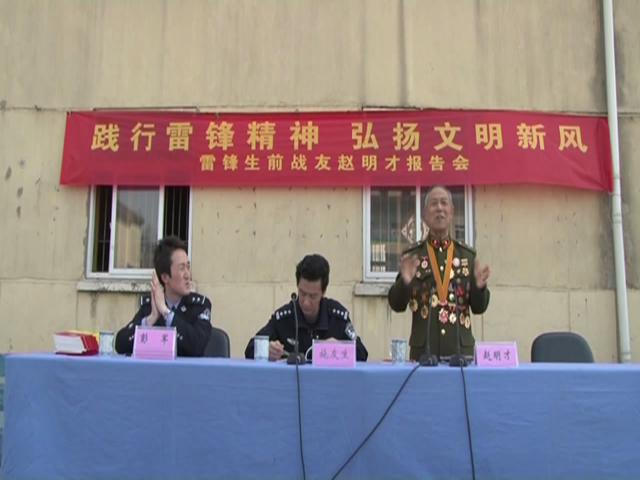
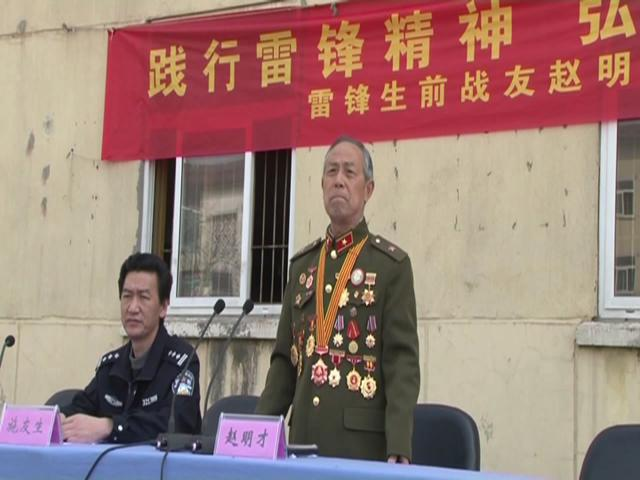

在毛泽东等老一辈无产阶级革命家为雷锋题词50周年之际，为弘扬雷锋精神，传播正能量，龙潭监狱邀请雷锋同志生前战友赵明才来监给监狱民警和服刑人员作了雷锋同志事迹报告。
赵明才同志用质朴的话语娓娓道来那浓浓的战友情谊，用许多平常而生动的小故事诠释了雷锋精神的深刻内涵。在场的很多人无不被赵老的报告所吸引，无不被故事中雷锋的高尚品质所震撼，甚至有一些当场留下了感动的泪水。
赵明才是雷锋生前战友。退休后，赵明才热心做好关心下一代工作，被评为“全国关心下一代工作先进个人”、“江苏省优秀校外辅导员”、“十佳志愿者”，连续三年被授予“南京市精神文明建设标兵”称号。据悉，监狱已特聘赵明才同志为“道德教育荣誉讲师”。

